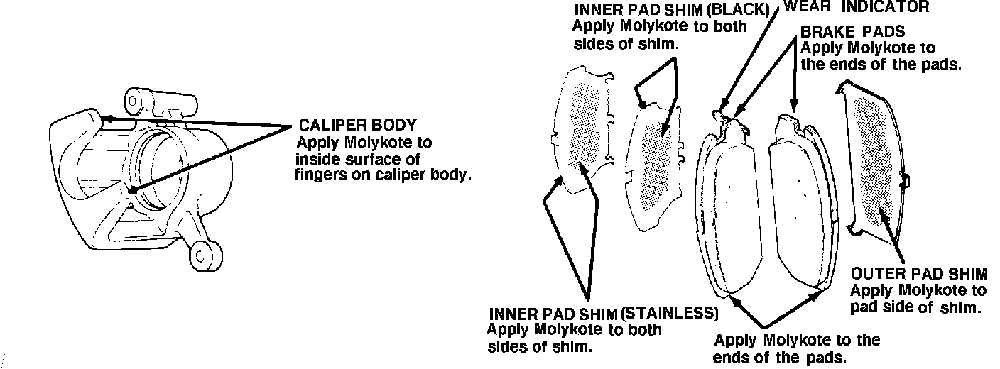

Front Brake - Squealing Sound
88acura01June 20, 1988
YEAR MODEL APPLICATION
'86-87 INTEGRA ALL
87-011
Integra Front Brake Squeal (Supercedes 87-011, dated June 29, 1987)
PROBLEM
The front brakes make a squealing sound when the brakes are applied lightly.
NOTE: Some brake squeal is normal as a result of differing driving habits and climates. This bulletin is intended to address only those cars which are considered to have excessive noise.

CORRECTIVE ACTION
Install the front brake pad shim set listed under PARTS INFORMATION
NOTE:
^ If brake judder exists, resurface both discs with the Kwik-Way Kwik Lathe and Power Feed, or the Snap-on Front Disc Brake Lather and Power Feed. Secure the discs to the hubs with four lug nuts and flat washers, torqued to 118 N-m (80 ft.lbs.). Remember, disc resurfacing will correct judder but has no lasting effect on squeal.
^ Replace the brake pads, if they are more than 50% worn (less than 5.0 mm thick). See Service Bulletin 88- 012, "Integra Front Brake Pad Selection."
^ Apply Molykote M77 thinly and evenly as shown; make sure it doesn't contaminat the friction material.
^ Wear indicators are riveted on one end of each of the inside pads. Install the inside pads with the wear indicator end up.
^ Torque lug nuts to 118 N-m (80 ft.lbs.). Excessive or uneven lug nut torque may cause excessive disc runout.
^ Break-in new pads by lightly applying the brakes and decelerating from 35 MPH to a complete stop. Do this 20 times.
PARTS INFORMATION
Front brake pad shim set: P/N 45011-SE0-000
WARRANTY CLAIM INFORMATION
Operation number: 410160 (shims only) Flat rate time: 1.0 hour (pads and/or shims)
410150 (pads and shims) 1.6 hour (pads, shims and
410150A (pads, shims and resurface front discs)
resurface front discs) Failed P/N: 45228-SE0-911
Defect code: 042
Contention code: B01